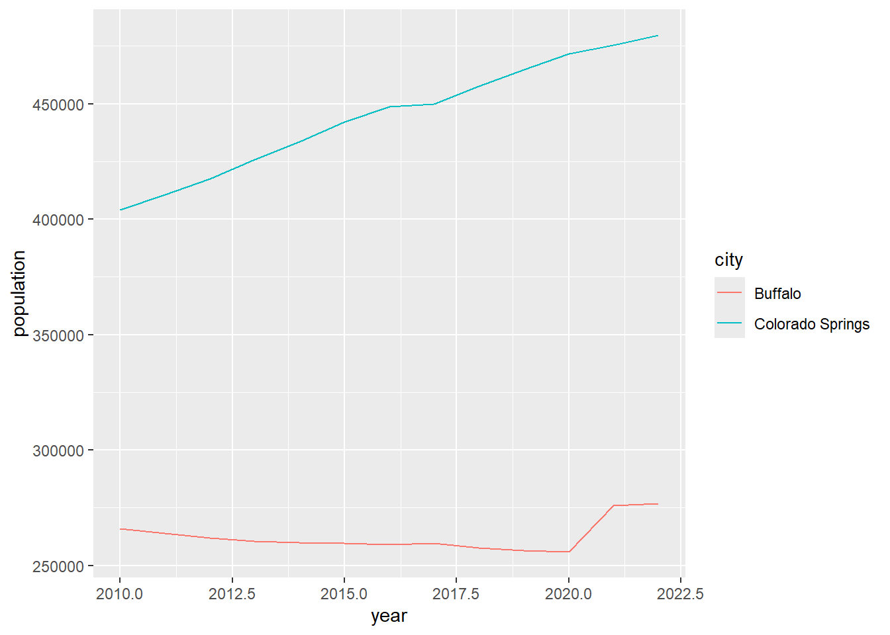
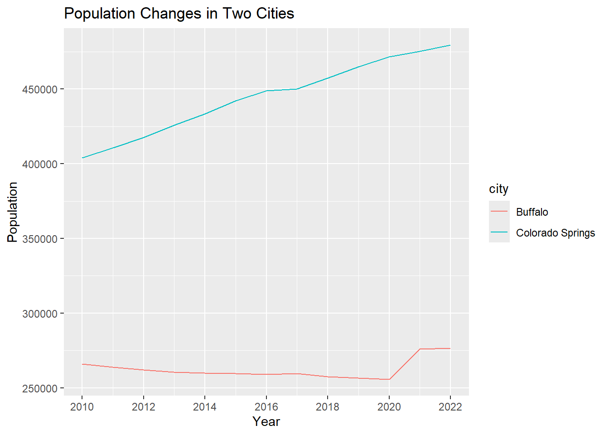
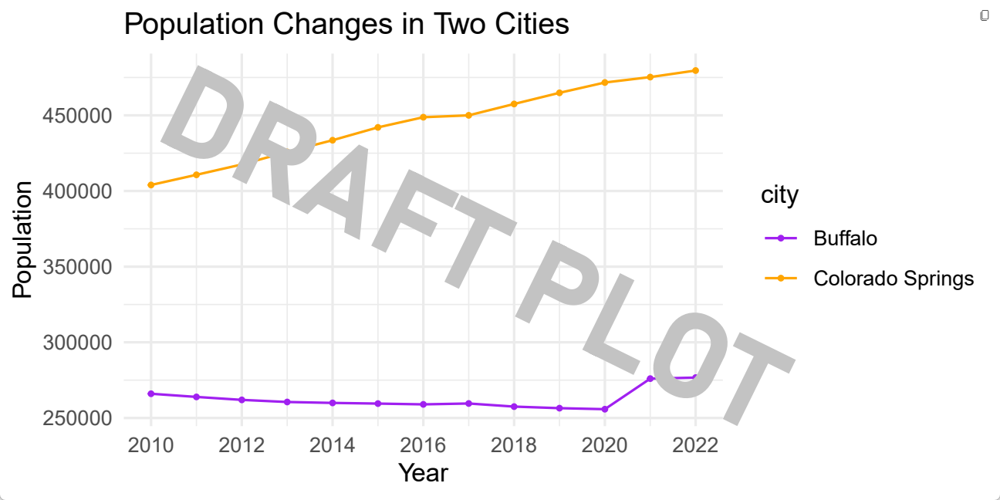
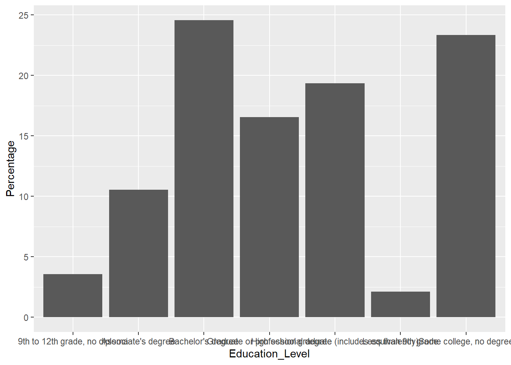
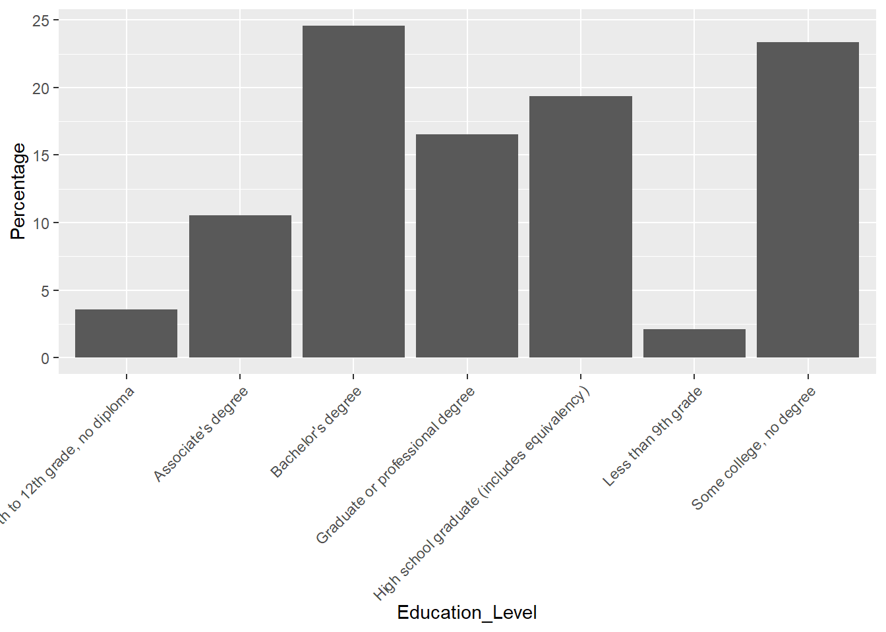
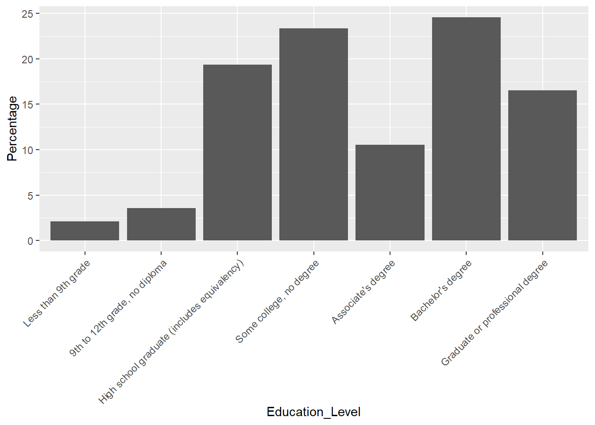
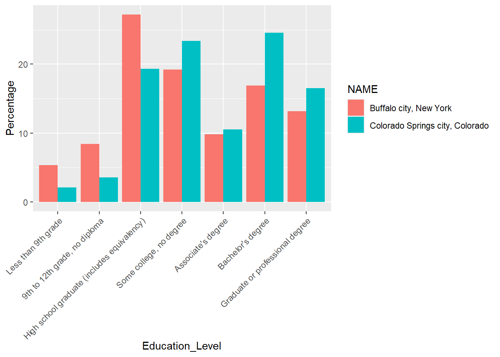
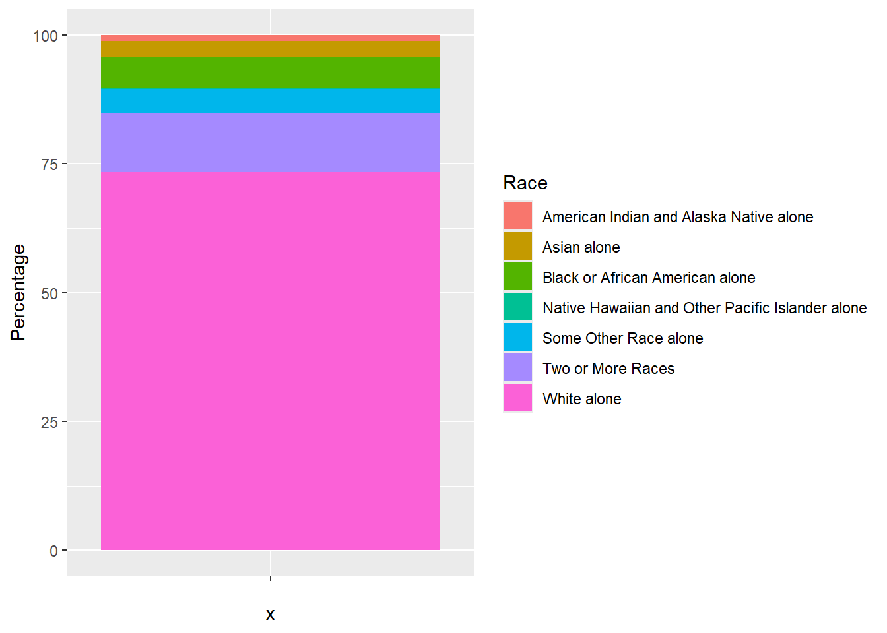
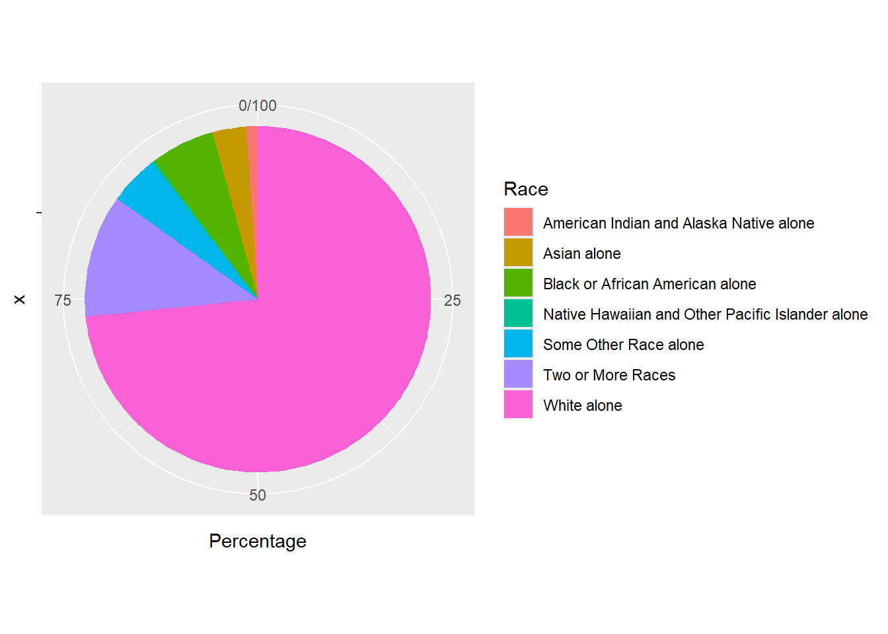

Chapter 3: The Data Analysis & Visualization Workflow
3.1 Lab Goals
This chapter aims to introduce the complete workflow of data analysis and visualization using R. After reading it, you should be able to:
- import data from local files
- query and clean data, such as:
- extract data corpus
- combine rows of different data frames into one
- create new columns from existing data
- sort and order data
- generate standard plots for exploratory
and visualization purpose by producing:
- bar charts
- line plots
- pie charts
- export plots as local files
3.2 Good Practice
Okay, I guess you already know what I am going to repeat about organizing folder. However, there are something new for this lab :)
3.2.1 Organizing Folders & Sub-folders
Similar to what we have done in previous labs, under the course folder, please create a folder called “lab3”.
- Next, in the lab3 folder, please create two
sub-folders:
- one is called “data” to store data files
- another one is “plot” to save plots exported from R.
After created these folders, your folders should look similar to Figure 3.1.

3.2.2 Data
I have collected some tables for this lab. These tables tell use about population’s education attainment and racial diversity in two cities: Colorado Springs (CO) and Buffalo (NY). These data are collected from US Census Bureau using the American Community Survey’s 5-year estimates.
Please follow the steps below:
Go to https://github.com/fuzhen-yin/uccs_geoviz/blob/main/archive/data/lab3_data.zip
Download the file “lab3_data.zip” (see Figure 3.2)
 Figure 3.2: Download “lab3_data.zip” .
Figure 3.2: Download “lab3_data.zip” .Unzip folder “lab3_data.zip” (see Figure 3.3)
 Figure 3.3: Extract files from “lab3_data.zip” .
Figure 3.3: Extract files from “lab3_data.zip” .Move all files to the “data” folder we just created in Step 3.2.1 (see Figure 3.4)

3.2.3 Housekeeping & Launching RStudio
Again, we would like to start a new project from scratch with a clean R Script. Please do the following steps. If you have any questions about these steps, please refer to Chapter 1.3 Launching RStudio for help.
- Step 1: Make sure all existing R projects are properly
closed.
- If not, please close it by going to File –> Close Project –> Save changes (see Chapter 2.5).
- Step 2: Create a New Project using Existing Directory, navigate to lab3, click open, then Create Project. (see Chapter 1.3).
- Step 3: Create a New Script by go to File –> New File –> R Script. Save the script by giving it a proper name.
3.2.4 Before You Start
Heads-Up!
This is a pretty long tutorial but it will guide you through a complete workflow of data analysis and visualization. As you can imagine, this will be a steep learning curve. Please take regular breaks (see instructions below).
This tutorial covers most of the techniques for Assignment 2. Please try to:
- Re-write the script by yourself.
- Read through the text carefully and try to understand what bits of code are doing as you go.
- Revisit this week’s lecture slides on “Data Analysis Workflow”
- It’s okay that you don’t fully understand some codes. Don’t worry as the key is to revisit later and try to work out what is going on. Learning is a iterative process.
- Start to think about how you can adapt a particular line of code or functions to your own project.
- Be CURIOUS!! Ask QUESTIONS!!
Tips on properly closing a project and reopen it later - If You Plan to Take Breaks!
If you plan to work on this lab later, please remember to save your script, and properly close the project and RStudio. To reopen your project, please:
- Step 1: launch RStudio.
- Step 2: open project by going to “File” –> “Open Project” –> Navigate to your “lab3” folder, click to open lab3.Rproj.
- Step 3: You should be able to see your script for lab3.
- If not, go to “File” –> “Open File” –> Navigate to your “lab3” folder, and open the script with the suffix .R.
- Step 4: Before writing new lines, please run the existing script from top to bottom.
3.3 Viz: Population Growth
Finally, we’ll start coding! From now, each section is an independent project that each produces one or more graphics for different purposes. Each project will expose you to a complete data analysis and visualization workflow.
We will use two cities Colorado Springs (CO) (a growing city) and Buffalo (NY) (a declining city) for case studies. The purpose of these graphics is to understand their different socio-demographic characteristics. This section is to produce a plot comparing the population growth between two cities.
Let’s install & call some
libraries first. Last time, we have used ggplot2. This
time, we will learn another library dplyr.
dplyris a very commonly used package for data frame manipulation (read more).
## Install libraries
install.packages("dplyr")
## If you don't have the package "ggplot2" installed
## please (1) un-comment the code below by deleting the hash tag; (2) run it
# install.packages("ggplot2")After installing packages, we call the two libraries. Hint: Everytime you open or restart an R project/script, you would need to call libraries. But you don’t need to install them every time
## Library
library(ggplot2) # plot## Warning: package 'ggplot2' was built under R version 4.4.3library(dplyr) # data manipulation3.3.1 Create Population Data 2010-2022
Data is the fundamentals of visualization. Here, we create a data frame (or table) to store the population data of Colorado Springs (COS) for 12 years, from 2010 to 2022. The original data is from US Census Bureau and Table S0101: Age and Sex. Here, we replicate some of the data records from that table.
We use the function
data.frame()to create a new table and give the table a name “pop_cos”. We want the table have three columns which are year, population and city.
## Colorado Springs, CO (COS)'s Population Change 2010-2022
pop_cos <- data.frame(
year = c(2010:2022),
population = c(403983,410688,417534,425805,433547,442040,448759,450000,457502,464871,471686,475282,479612),
city = "Colorado Springs"
)Next, let’s briefly check the data types in this table using the
str() function. And have a look at the table using
View(). The View() function is the same as you
click the “pop_cos” variable in the
Environment Tab.
# Check data type
str(pop_cos)
# View the data frame "pop_cos".
View(pop_cos)Okay, let’s go back to the script and create another data frame for Buffalo (NY) and assign the data frame to the variable “pop_buf”.
## Buffalo, NY (BUF)'s Population Change 2010-2022
pop_buf <- data.frame(
year = c(2010:2022),
population = c(266012,263914,261955,260568,259959,259517,258989,259574,257518,256480,255805,276011,276688),
city = "Buffalo"
)3.3.2 Data Query & Analysis
Let’s explore these two data frames “pop_cos” and
“pop_buf” a little bit. Remember the $ symbol? It
can be used to select a particular column from a data frame and return
the output as a VECTOR. Let’s check the summary
statistics of population in the two cities by using
summary().
# What columns are in the two dataframes: "pop_cos" and "pop_buf"?
names(pop_cos)## [1] "year" "population" "city"names(pop_buf)## [1] "year" "population" "city"# Summary statistics of the population column - COS?
summary(pop_cos$population)## Min. 1st Qu. Median Mean 3rd Qu. Max.
## 403983 425805 448759 444716 464871 479612# Summary statistics of the population column - BUF?
summary(pop_buf$population)## Min. 1st Qu. Median Mean 3rd Qu. Max.
## 255805 258989 259959 262538 263914 276688The summary statistic suggests that Colorado Springs has more population than BUF. Next, let’s look at the data frame more carefully by sub-setting particular records based some conditions.
- Extract a particular column and return it as a DATAFRAME
# return as DATAFRAME: subset the "population" column from the "pop_cos" data frame
pop_cos['population']- Extract a particular column and return it as a VECTOR
# return as VECTOR: subset the "population" column from the "pop_cos" data frame
pop_cos$population- Exacting two or more column by calling column names. The
c()function combines two elements"year"and"population"into a vector.
# subset two columns "year" and "population" from the "pop_cos" data frame
pop_cos[c('year','population')]- Select records based on conditions (e.g., when population is over 450000). The code below gives you all rows that with a population over 450000.
# Check at what years COS has more than 450000 population
pop_cos[pop_cos$population > 450000,]Okay, the output suggests that since 2018, Colorado Springs has population exceeding 450000. Now, let’s check that for Buffalo.
# Check at what years BUF has more than 450000 population
pop_buf[pop_buf$population > 450000,]Oops! It seems Buffalo never had its population over 450000. All these comparison suggests at least in the last decade, Colorado Springs is more populated than Buffalo.
Next, let’s calculate the population growth rate from 2010 to 2022 for the two cities. The population growth rate is calculated using the equation below (Eq. 3.1):
\[ Growth Rate = 100 * \frac {Population_{2022} - Population_{2010}} {Population_{2010}} \]
Calculate the population growth rate for Colorado Springs. We extract the # of population in 2010 and 2022 separately.
The code below is (1) asking the machine to locate the record (or
row) in the data frame “pop_cos” with the year
column equal to 2022, (2) asking the machine to return the value in the
population column, (3) and save that value as a new
variable pop_cos_2022.
# Filter a particular value population in a particular year
# Colorado Springs' population in 2022
pop_cos_2022 <- pop_cos[pop_cos$year == "2022", "population"]
# Colorado Springs' population in 2010
pop_cos_2010 <- pop_cos[pop_cos$year == "2010", "population"]After extracting the population values for 2010 and 2022, let’s calculate the growth rate using Eq. 3.1.
[Q] Please report the value of
pop_change_cos to the lab3 report.
# population growth rate - COS
pop_change_cos <- 100 * (pop_cos_2022 - pop_cos_2010) / pop_cos_2010
pop_change_cosNext, we calculate the population growth rate for Buffalo.
[Q] Please report the value of
pop_change_buf to the lab3 report.
# Buffalo' population in 2022
pop_buf_2022 <- pop_buf[pop_buf$year == "2022", "population"]
# COS' population in 2010
pop_buf_2010 <- pop_buf[pop_buf$year == "2010", "population"]
# calculate population growth rate
pop_change_buf <- 100 * (pop_buf_2022 - pop_buf_2010) / pop_buf_2010
pop_change_bufOkay, it seems both cities have positive population growth rates between 2010 and 2022. But Colorado Springs has such a rapid growth in the past decade. Compared to Colorado Springs, Buffalo was experiencing an incremental population growth.
BUT! Does this give us a full picture of population changes of two cities? I am not sure. Let’s visualize their population year by year and see what we can find.
3.3.3 Line Plots
Let’s combine the two data frame pop_cos and
pop_buf together and save it as a new variable
pop_cos_buf. Remember that we have checked their column
names in Step
3.3.2. One condition to combine rows together is that they need to
have the same column names.
## Combine two data frames together by rows. This requires two data frames have the same column names
pop_cos_buf <- rbind(pop_cos, pop_buf)## Have a look at the table
View(pop_cos_buf)Then, we produce a simple line chart of population growth for two
cities by using the ggplot() function. The code below asks
the machine to do the following tasks.
data =specifies to usepop_cos_bufas the base data;aes()describe how variables in the data are mapped to visual properties;geom_line()makes a line plot.
# a line chart of population growths: basic version
ggplot(data = pop_cos_buf,
aes(x=year, y=population, group=city, color=city)) +
geom_line()
Well, it produces a plot showing the population trend in two cities. It’s good and fast to explore the data. But, I am not satisfied with how it looks. For example:
- I don’t like the grey background.
- The x-axis labels are with decimals which are not good for years.
- The lines seem not thick enough.
Let’s improve the plot by giving more instructions in terms of how we want the plot illustrates the data.
[Q] Please run the code blow and observe how this plot is different from the previous one. In lab3 report, please report what are the purpose of these codes:
scale_x_continuous(breaks =c(2010,2012,2014,2016,2018,2020,2022))ggtitle("Population Changes in Two Cities")xlab("Year")ylab("Population")
# update plot
ggplot(data = pop_cos_buf, aes(x=year, y=population, group=city, color=city)) +
geom_line() +
scale_x_continuous(breaks =c(2010,2012,2014,2016,2018,2020,2022)) +
ggtitle("Population Changes in Two Cities") +
xlab("Year") +
ylab("Population")
Let’s continue to improve the plot by:
- adding data points to the plot using
geom_point() - changing line colors using
scale_color_manual( values = c()) - apply the minimalist theme
theme_minimal(). The packageggplothas many pre-defined themes (see here).
This time, instead of visualizing the plot directly, we save it into
the variable plot1_growth and plot it later by calling this
variable.
# improve the plot
plot1_growth <- ggplot(data = pop_cos_buf, aes(x=year, y=population, group=city, color=city)) +
geom_line(linewidth = 0.5) +
geom_point(size = 0.7) +
scale_x_continuous(breaks =c(2010,2012,2014,2016,2018,2020,2022)) +
scale_color_manual(values = c("purple","orange")) +
ggtitle("Population Changes in Two Cities") +
xlab("Year") +
ylab("Population") +
theme_minimal()
# view the plot
plot1_growth
3.3.4 Export Plots
It seems the plot plot1_growth is good enough. Let’s
stop here for now and export it to the “plot” folder we have
created in Step
3.2.1.. We will export it as a .pdf file because it can store
information in vector format and is easier to edit later. We will use
the function pdf().
The path
"plot/plot1_population_growth_two_cities.pdf"tells the machine to save the pdf to the “plot” folder and name it as “plot1_population_growth_two_cities.pdf”. Feel free to use a different name.
pdf("plot/plot1_population_growth_two_cities.pdf", width = 6, height =3 )
print(plot1_growth)
dev.off()[Q] After running the code above, please go to lab3 folder –> plot folder. Do you see a pdf there? Open it and do a screenshot for lab3 report.
3.4 Viz: Education Attainment
I know it’s a lot already. If you plan to take a break, this is a good time! Please refer to Section 3.2.4 for instructions on how to properly close the project and re-open it later.
3.4.1 Get Data
Okay, if you plan to continue, hang on tight! I will be very brief to save times & efforts.
This section explores the education attainment (of people 25 years
and older) of the two cities, Colorado Springs and Buffalo. Unlike the
previous section, this time we read the data from local
.csv files using the function read.csv().
The file path data/S1501_Education_ColoradoSprings.csv
tells the machine to go to the data folder and import the
.csv file
“S1501_Education_ColoradoSprings.csv”.
## Education Attainment - Colorado Springs
edu_cos <- read.csv("data/S1501_Education_ColoradoSprings.csv")
## Education Attainment - Buffalo
edu_buf <- read.csv("data/S1501_Education_Buffalo.csv")Check data type.
str(edu_cos)
str(edu_buf)The Education Attainment data is collected from US Census Bureau via ACS 5-year survey. The link of the original table is S1501: Educational Attainment. The data we have in the .csv files are a corpus of that table by focusing on population age 25 and elder.
Let’s have a look at the table first.
View(edu_cos)
View(edu_buf)3.4.2 Data Manipulation
The Count column tells us how many people is at a
particular education level. Let’s check the total number of people in
this data by using the sum() function.
# Check the total population age 25 and over in each city
sum(edu_cos$Count)
sum(edu_buf$Count)Intead of the column “count”, we are more interested in calculating the “percentage” of population in each level. The percentage is calculated as:
\[ \% \ of \ people \ in \ a \ particular
\ level = 100 * \frac {Count \ of \ people \ in \ a \ particular \
level} {Total \ population} \]
Let’s calculate the percentage in each education level and save it as a new column “Percentage”.
# Create a new column to calculate the percentage (%) of population attaining different education levels
edu_cos["Percentage"] <- 100 * edu_cos$Count / sum(edu_cos$Count)
edu_buf["Percentage"] <- 100 * edu_buf$Count / sum(edu_buf$Count)3.4.3 Bar Plot
Let’s start to plot the education attainment for Colorado Springs.
# basic version. Plot two cities separately.
ggplot(edu_cos, aes(x=Education_Level, y=Percentage)) +
geom_bar(stat = "identity")
Hmmm, the plot really doesn’t look great. The x-axis texts stick together and hard to read. It will be better if we can rotate the x-axis a little bit. Let’s rotate it by 45 degree.
# rotate x axis
ggplot(edu_cos, aes(x=Education_Level, y=Percentage)) +
geom_bar(stat = "identity") +
theme(axis.text.x = element_text(angle = 45, vjust = 1, hjust=1))
It is much better. But it seems the x-axis does follow the order as
the data frame. Let’s check how the education level is ordered in the
table edu_cos.
edu_cos$Education_Level The order of education level makes more sense because it is from the lowest to the highest. Let’s force the machine to order the x-aixs as the data frame, and reproduce the plot.
# reorder x-axis as the data frame shows
edu_cos$Education_Level <- factor(edu_cos$Education_Level, levels=unique(edu_cos$Education_Level))
# plot
ggplot(edu_cos, aes(x=Education_Level, y=Percentage)) +
geom_bar(stat = "identity") +
theme(axis.text.x = element_text(angle = 45, vjust = 1, hjust=1))
Let’s combine Buffalo and Colorado Springs together and make a bar plot for comparison.
# combine the rows from the two data frames "edu_cos", "edu_buf"
edu_cos_buf <- rbind(edu_cos, edu_buf)
edu_cos_buf$Education_Level <- factor(edu_cos_buf$Education_Level, levels=unique(edu_cos_buf$Education_Level))
# make a bar plot for comparison
ggplot(edu_cos_buf, aes(x=Education_Level, y=Percentage, fill = NAME)) +
geom_bar(stat = "identity", position = "dodge") +
theme(axis.text.x = element_text(angle = 45, vjust = 1, hjust=1))
Improve the plot a little bit by:
- using different colors:
scale_fill_manual() - rename x and y labels:
xlab()andylab() - apply a black & white theme:
theme_bw()
We will save the plot under the variable plot1_education
and call it to see the figure.
# change colors and use a customized theme
plot1_education <- ggplot(edu_cos_buf, aes(x=Education_Level, y=Percentage, fill = NAME)) +
geom_bar(stat = "identity", position = "dodge") +
scale_fill_manual(values=c("#F5B19C","#0F4C81")) +
theme_bw() +
theme(axis.text.x = element_text(angle = 45, vjust = 1, hjust=1)) +
xlab("Education Attainment") +
ylab("Percentage (%)")
plot1_educationHave a look at the plot and observes how the two cities are different from each other in terms of education attainment.
3.4.4 Export
# export
pdf("plot/plot2_education_attainment_percentage_two_cities.pdf", width = 8, height =5 )
print(plot1_education)
dev.off()[Q] After running the code above, please go to lab3 folder –> plot folder. Do you see a new pdf there? Open it and do a screenshot for lab3 report.
3.5 Viz: Racial Diversity
This section examines the racial diversity in Colorado Springs and Buffalo, and uses different visualization techniques (e.g., pie chart and waffle chart) to illustrate the same data.
3.5.1 Import Data
First, let’s import the data from local .csv files: “B02001_Race_ColoradoSprings.csv” and “B02001_Race_Buffalo.csv”.
This data is collected by US Census Bureau via ACS 5-year survey. The original table is B02001:Race.
# Read Data
race_cos <- read.csv("data/B02001_Race_ColoradoSprings.csv")
race_buf <- read.csv("data/B02001_Race_Buffalo.csv")# Examine data type
str(race_cos)
str(race_buf)# Have a look at the data frame
View(race_cos)
View(race_buf)3.5.2 Data Manipulation
Similar to step
3.4.2, we create a new column called “Percentage” to
calculate the proportion of population under each category. But this
time, we want to round the column “Percentage” to two decimal
digits (0.00) by using the function round().
# Calculate Percentage - COS
race_cos['Percentage'] <- 100 * race_cos$Count / sum(race_cos$Count)
# Round it to two decimal digits
race_cos['Percentage'] <- round(race_cos['Percentage'], 2)
# Let's do the same to the Buffalo race dataset
race_buf['Percentage'] <- 100 * race_buf$Count / sum(race_buf$Count)
race_buf['Percentage'] <- round(race_buf['Percentage'], 2)3.5.3 Pie Charts
Let’s first create a stacked bar plot to explore the dataset a little bit.
ggplot(race_cos, aes(x="", y=Percentage, fill=Race)) +
geom_bar(stat="identity", width=1) 
Next, we will build upon the code above to convert it into a pie
chart by adding another function coord_polar().
coord_polar()applies the polar coordinate system that is most commonly used for pie charts. It is a stacked bar chart in polar coordinates
ggplot(race_cos, aes(x="", y=Percentage, fill=Race)) +
geom_bar(stat="identity", width=1) +
coord_polar("y", start=0)
Finally, we will improve the pie chart by:
theme_minimal(): apply a minimalist styleelement_blank(): remove x and y axis labelsscale_fill_brewer(palette="Set2")apply the ‘Set2’ color palette.ggtitle()add a title to the plot.
Here are the codes for other color palettes. Or you can find more here: R Color Cheatsheet.

Let’s save the final pie chart as “plot3_race_cos” and export it to the “plot” folder.
# Basic pie chart - Colorado Springs
plot3_race_cos <- ggplot(race_cos, aes(x="", y=Percentage, fill=Race)) +
geom_bar(stat="identity", width=1) +
coord_polar("y", start=0) +
theme_minimal() +
theme(axis.title.x = element_blank(),
axis.title.y = element_blank()) +
scale_fill_brewer(palette="Set2") +
ggtitle("Colorado Springs")
# export
pdf("plot/plot3_race_cos.pdf")
print(plot3_race_cos)
dev.off()Create a pie chart for Buffalo and export it to the folder ‘plot’.
# Basic pie chart - Buffalo
plot3_race_buf <- ggplot(race_buf, aes(x="", y=Percentage, fill=Race)) +
geom_bar(stat="identity", width=1) +
coord_polar("y", start=0) +
theme_minimal() +
theme(axis.title.x = element_blank(),
axis.title.y = element_blank()) +
scale_fill_brewer(palette="Pastel1") +
ggtitle("Buffalo")
pdf("plot/plot3_race_buff.pdf")
print(plot3_race_buf)
dev.off()[Q] After running the code above, please go to lab3 folder –> plot folder. Do you see pdfs for two pie charts there? Open them and do screenshots for lab3 report.
3.6. Close & Exit
Congratulations!! You made it to the end. Let’s close the project.
Please go “File”–> “Close Project” – a pop window asking “Do you want to save these changes” –> “Yes”.